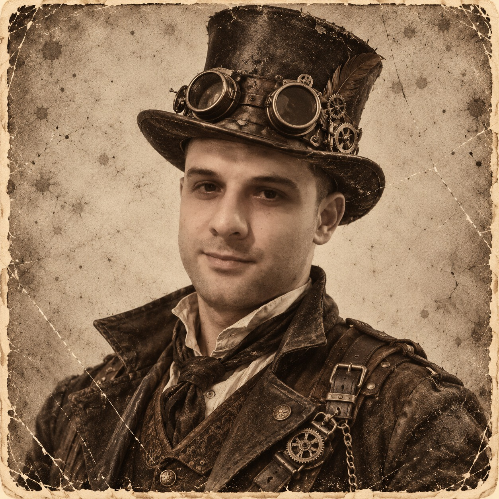
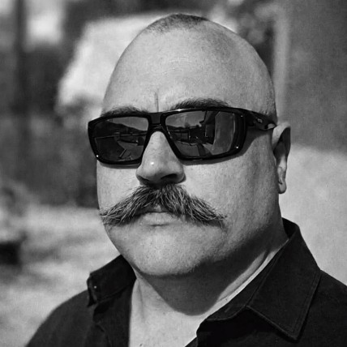

CHECKING THE FRONTIER
DEAD OR ALIVE · TACTICAL PVP
Your posse.
Your frontier.
Rally your friends. Choose your battlefield.
Leave your mark on the Old West.
Live lobbies
SYNCINGChecking available lobbies…
45.14.187.72:30120VORP · NATIVE REDM VOICE
NEVER RIDE ALONE
Your friends
Accept a request to unlock private chat. Names come from linked RedM players.
Find your people
BUILD YOUR LEGACY
Your guild
Guild owners can invite accepted friends from the Friends page.
WELCOME TO THE FRONTIER
Dead or Alive
Platoons, parties, and frontier warfare.
A tactical PvP community built for RedM. Join a public lobby, rally your friends, and fight for your place on the frontier.

Manu
OWNERYour player. Your control.
Link once using /launcher in-game. The launcher never needs your Steam password or administrator access. Use /launcher revoke in-game to sign out all devices.
RedM handles game downloads and voice. Chat is stored on the community server. Private chat is restricted to accepted friends; guild chat is restricted to current members.
Global chat
Messages are shared with players in-game.